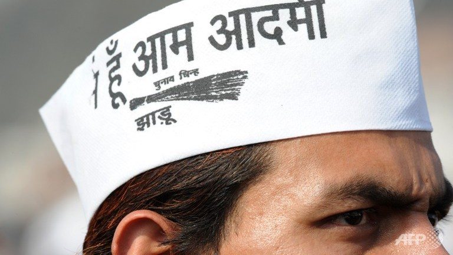
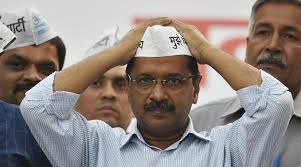
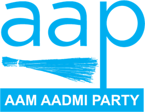

AAM AADMI PARTY
The Aam Aadmi Party has decided to form the government in Delhi. Here is a look at how AAP chief Arvind Kejriwal entered politics and made it to the Chief Minister's chair in a year. On October 2, 2012 on the occasion of Gandhi Jayanti in 2012, Arvind Kejriwal announced the formation of his political party in Delhi.Kejriwal is a graduate in mechanical engineering from Indian Institute of Technology (IIT) Kharagpur. He is the national convener of the Aam Aadmi Party. He had previously served as Chief Minister of Delhi from December 2013 to February 2014, stepping down after 49 days.
|  |
VISIONAAP has promised to bring down the electricity expenditure of residents of Delhi by 50 per cent. To many, the promise may sound unrealistic. But the claim is based on the premise that people have been getting “inflated bills” because of malpractices and monopoly of power companies. To fix this, the party has promised to conduct regular audits of discoms and rectify the “inflated bills”, after getting them checked by independent agencies. The licences of the companies which refuse to undergo an audit will stand cancelled.
|
|  |
MANIFESTOThe manifesto also reinforces the concept by strongly reiterating the party’s core agenda of scraping Article 370, introduction of a Uniform Common Civil Code and construction of Ramjanmbhoomi temple at Ayodhya. At the same time, the party has stated that it would be its “endeavour to secure Constitutional protection on issues of faith and belief”. The new dimension has been added not only to show the BJP’s commitment to Ram temple but also to expand its political territory in Kerala through the issue of allowing women of all ages to enter the Sabirmala temple. The document, following its core ideology, vows to eliminate triple talaq and nikah halala.Other strands that dominate the document are about rural India and the building of infrastructure. While sharing its vision to make India a $5 trillion economy by 2025 and the third largest economy of the world by 2030, the manifesto has promised to invest an amount of 100 lakh crore to develop the infrastructure of the country. The document has also promised to build “next generation” |
|  |
MISSIONThe manifesto released by the Aam Aadmi Party (AAP) for the upcoming Delhi Assembly Elections 2013 can be seen as a populist one as it offers everything on the platter, ranging from free water, electricity and healthcare at lower prices to sanitation facilities, subsidies on solar power production and an innovative decentralisation plan in the form of “Mohalla Sabhas”. The party has released separate manifestos for each of the 70 constituencies, but questions are being raised about whether these promises can be implemented.
Another noteworthy omission is about jobs and employment. At a time when unemployment is at the highest level of the last 45 years despite the refusal of the government to accept the NSSO’s leaked data, skipping such a vital issue exposes the ruling party to opposition attacks. |